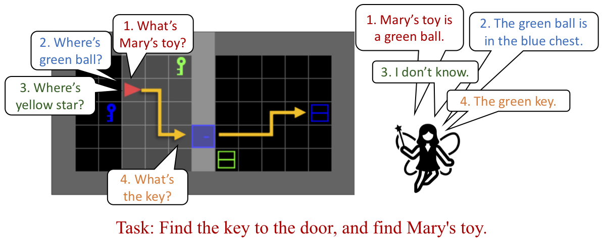
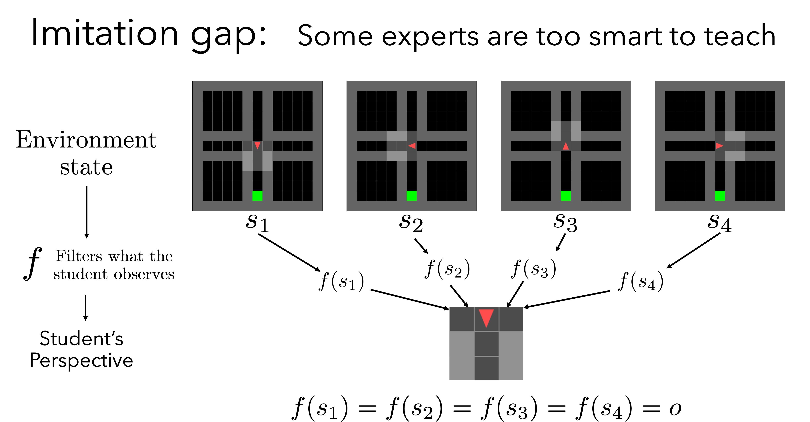
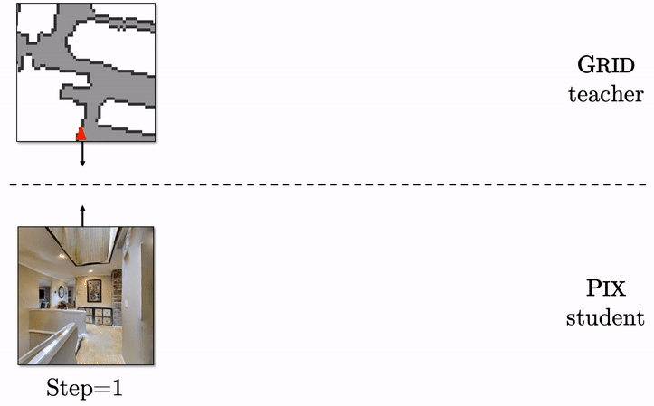
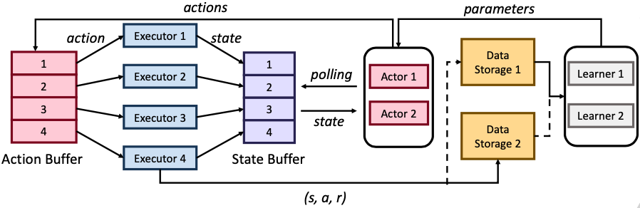
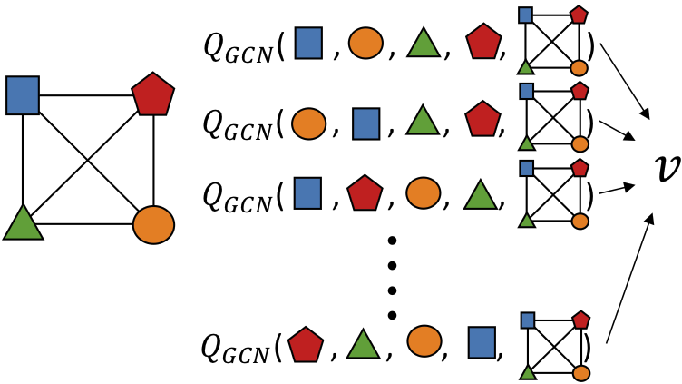
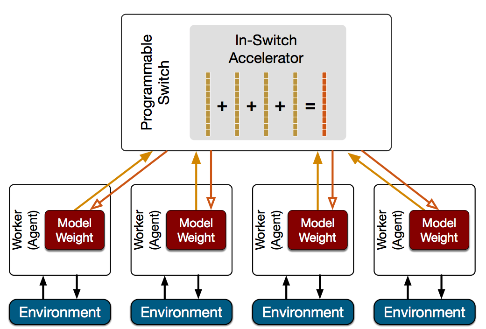
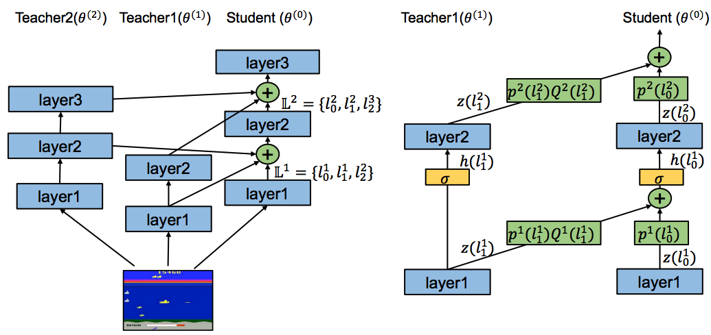
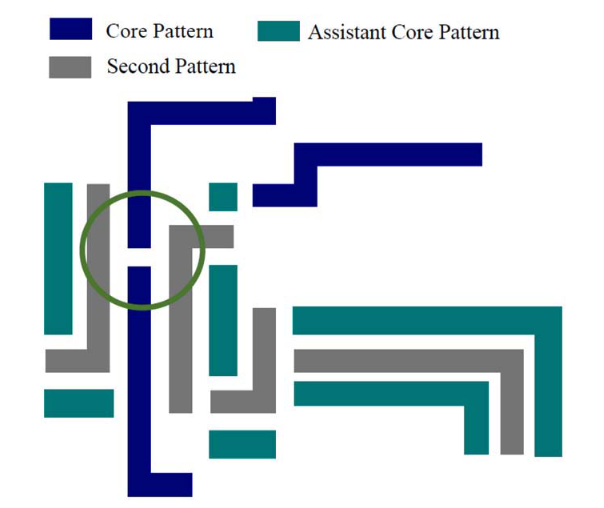
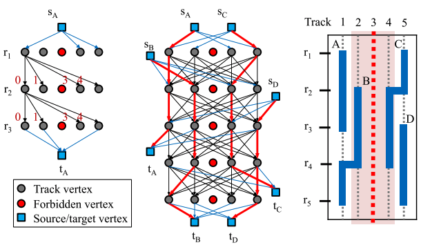

Iou-Jen (Adam) Liu
|
My research centers around Deep Reinforcement Learning, Embodied AI, and Multi-Agent Learning. At Google, I work on visual-language models for video understanding and classification. Email / CV / Google Scholar / GitHub |

|

|

|

|
|
| National Taiwan University 2008 - 2015 |
University of Illinois 2015 - 2022 |
Microsoft Research Montreal Summer 2021 |
Google 2022 - present |
|  |
Iou-Jen Liu*, Xingdi Yuan*, Marc-Alexandre Côté*, Pierre-Yves Oudeyer, Alexander G. Schwing (ICML'22) International Conference on Machine Learning, 2022 [pdf] [project] |
|  |
Luca Weihs*, Unnat Jain*, Iou-Jen Liu, Jordi Salvador, Svetlana Lazebnik, Aniruddha Kembhavi, Alexander G. Schwing (NeurIPS'21) Neural Information Processing Systems, 2021 [pdf] [project] |
|  |
Unnat Jain, Iou-Jen Liu, Svetlana Lazebnik, Aniruddha Kembhavi, Luca Weihs*, Alexander G. Schwing* (ICCV'21) International Conference on Computer Vision , 2021 [pdf] [project] |

|
Iou-Jen Liu*, Zhongzheng Ren*, Raymond A. Yeh*, Alexander G. Schwing (IROS'21) International Conference on Intelligent Robots and Systems , 2021 Also presented in RL for Real Life Workshop at ICML 2021 [pdf] [project] |

|
Iou-Jen Liu, Unnat Jain, Raymond A. Yeh, Alexander G. Schwing (ICML'21) International Conference on Machine Learning, 2021 Long Talk (Top 3%) [pdf] [project] |
|  |
Iou-Jen Liu, Raymond A. Yeh, Alexander G. Schwing (NeurIPS'20) Neural Information Processing Systems, 2020 [pdf] [project] |
|  |
Iou-Jen Liu*, Raymond A. Yeh*, Alexander G. Schwing (CoRL'19) Conference on Robot Learning, 2019 [pdf] [project] |
|  |
Youjie Li, Iou-Jen Liu, Yifan Yuan, Deming Chen, Alexander G. Schwing, Jian Huang (ISCA'19) International Symposium on Computer Architecture, 2019 Also presented in NSDI'19 (poster) [pdf] [video] |
|  |
Iou-Jen Liu, Jian Peng, Alexander G. Schwing (ICLR'19) International Conference on Learning Representations,2019 [pdf] |
|  |
Iou-Jen Liu, Shao-Yun Fang, Yao-Wen Chang (TCAD'16) IEEE Transactions on Computer-Aided Design of Integrated Circuits and Systems, Vol. 35, 2016 [pdf] (DAC'14) Design Automation Conference, 2014 [pdf] |
|  |
Iou-Jen Liu, Shao-Yun Fang, Yao-Wen Chang (TCAD'15) IEEE Transactions on Computer-Aided Design of Integrated Circuits and Systems, Vol. 34, 2015 [pdf] (DAC'13) Design Automation Conference, 2013 [pdf] |
|
UIUC, Head Teaching Assistant, Sp17, Fa17, Sp18, Su18, Fa18, Sp19, Su19, Fa19, Sp20, Fa20, Sp21, Fa21, Sp22 Teachers Ranked as Excellent: Sp17, Sp18, Fa18, Sp19, Fa19, Sp22 NTU, Teaching Assistant, Spring 2014 |